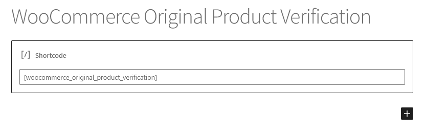
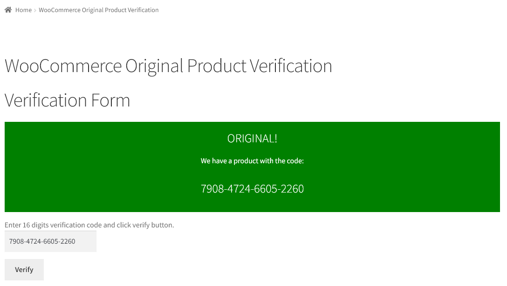

WooCommerce Original Product Verification Plugin
You can use the WooCommerce Original Product Verification Plugin to add verification code to your WooCommerce products. This plugin automatically generates the verification code.
With the WooCommerce Original Product Verification Plugin you can create your own verification codes. With this add-in installed on your WordPress site, you can generate multiple verification codes for each product. With the verification code generator, your products are permanently recognized. You can find out whether the D reading code is original by querying it through your website. You can generate a verification code through your WooCommerce store in just a few clicks . Our plugin is the first and only one of the most powerful verification code managers. With the WooCommerce Original Product Verification Plugin, you can generate verification codes for your software, games and digital products or physical products.
What is WooCommerce?
WooCommerce is one of those plugins that helps you sell over the internet. It is used completely free of charge. It can be easily integrated into WordPress-based internet addresses. You can open stores and sell products through WooCommerce. If you have an e-commerce site, you can sell through the plugin. WooCommerce, made by WooThemes, one of the WordPress theme developers, continues to evolve every day. Downloaded by thousands of people, the WooCommerce Original Product Verification Plugin serves effectively on WooCommerce.
What is WooCommerce Original Product Verification Plugin?
The plugin helps site administrators easily view product verification codes thanks to its simple interface. You will automatically generate verification codes through the plugin and be able to assign them to products. Thanks to the WooCommerce Original Product Verification Plugin app, you can benefit from the best verification code generator. You can feel the confidence of using verification codes from your WooCommerce store in just a few clicks.
What Does the WooCommerce Original Product Verification Plugin Do?
You can activate the check box by using the product edit page. The WooCommerce Original Product Verification Plugin offers support for generating verification code for free. Through this plugin;
- You can generate bulk verification codes through the verification code generator.
- You can perform validation code management.
- You can export verificationcodes.
- Verification codescan be queried through your website.
Thanks to the E Lens, the authenticity of your products can be questioned through your website.
How to Use the WooCommerce Original Product Verification Plugin
It's extremely easy to create and add verification code through your website. You can follow these steps to create a new verification code;
1. Choose a Product
Get the ID of the product you want from the 'All products' section available.
2. Enter Product ID
Enter the ID of the product you selected.
3. Enter The Number Of Verification Codes
Enter the maximum quantity that you want to produce for a product.
4. Create Verification Codes
Finally, click on the 'Create' button. That's it. Quickly and easily. Your verification codes are automatically generated.
Why Choose WooCommerce Original Product Verification Plugin?
An automatic verification code will be generated to use the original product. When you purchase the product, it will be delivered to customers with a verification code. Thanks to its simple interface, the WooCommerce Original Product Verification Plugin enables customers to display the authenticity of the products with the verification code. With the WooCommerce Original Product Verification Plugin, it becomes much easier to managethe verification code at your internet address.
WooCommerce Original Product Verification Plugin Product Support
You can optionally export the verification codes to print the label from your printing machine.
Verification Code Encryption
You can list the verification codes that are stored in the database to ensure your security. You can easily use verification codes, knowing that they're safe. This is how you can tell how many verification coded products you have. You can create a source set of product name and validation code.
Having trouble generating a verification code? You can easily get verification codes by purchasing our plugin immediately at this very small price. You can use our verification code generator plugin around the clock.
Screenshots
|  | |
|  | |
 |